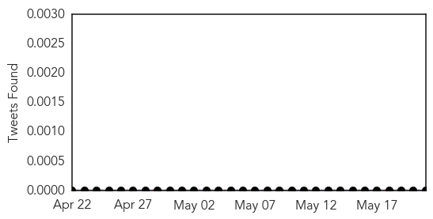
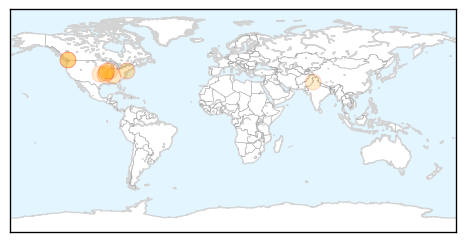

Measles
30-Day Web Trend
2 alerts, 0 warnings

30-Day Twitter Trend
0 alerts, 0 warnings

Article Locations

Article Confidences

Top Articles:
- 0.903
- Alarm over measles surge
- 0.843
- Health officials confirm second D.C.-area measles case
- 0.841
- Va. health officials report second confirmed measles case, warn of potential exposures
- 0.828
- International SOS Offers Advice in South East Asia after Sharp Rise in Measles Cases
- 0.814
- Why are vaccination rates dropping?
- 0.779
- Measles patients with complications being admitted to CHK
- 0.735
- Regional alert issued after second measles case reported
- 0.631
- Aid agencies working to improve conditions for S. Sudan refugees in Ethiopia - Ethiopia
- 0.614
- Virginia Measles Exposure Might Have Extended To Bethesda
- 0.530
- A normal reaction?: Six more children faint during measles drive
Top Tweets:
-
No tweets found for May 21, 2014
Hepatitis
30-Day Web Trend
2 alerts, 0 warnings

30-Day Twitter Trend
0 alerts, 0 warnings

Article Locations
Article Confidences

Top Articles:
- 0.941
- Hepatitis C testing advised for 936 Former patients at PeaceHealth Southwest Medical Center may have been exposed . News
- 0.878
- Up to 5,000 exposed to hepatitis A at restaurant
- 0.870
- Burger worker may have exposed thousands to hepatitis
- 0.796
- Burger worker may have exposed thousands to hepatitis
- 0.745
- CIA Halts Sham Vaccination Campaigns as Ploy for Intelligence Operations
- 0.720
- 936 in Vancouver possibly exposed to Hep C
- 0.658
- Health officials have set up hepatitis immunization clinics
- 0.629
- Prostate Cancer May Result From Sexually Transmitted Disease
- 0.607
- Pancreatic and Liver Disease Deaths Rise Due to Advancements in Other Cancer Care
- 0.605
- thenews.com.pk
Top Tweets:
-
No tweets found for May 21, 2014